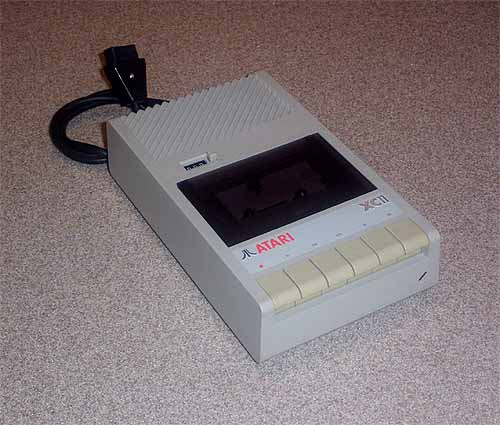
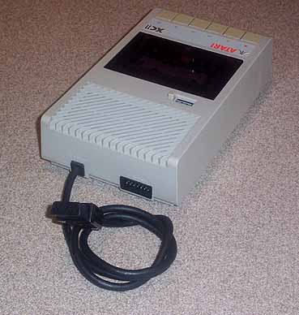

The Atari XC11
DataRecorder Tape Drive

The Atari XC11 Datarecorder was the lower
cost version of Atari XE line
of cassette drives.
This version was sold primarily in Europe while the
more widespread and available version,
the XC12 was sold worldwide.

The XC-11 had both an SIO connector port
and a built in SIO cable
allowing the device to be installed anywhere
along the Atari 8bit
SIO bus. The addition
of the SIO port meant that the XC-11 would
not be an End of Line device like earlier
Atari datarecordes such
as the original 1979 Atari 410.
|